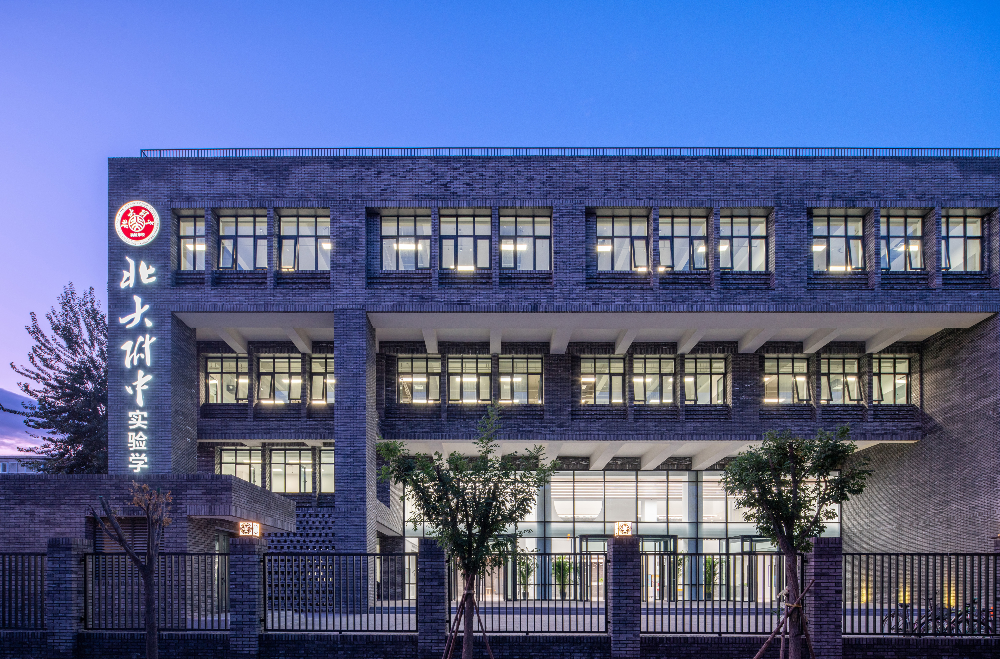
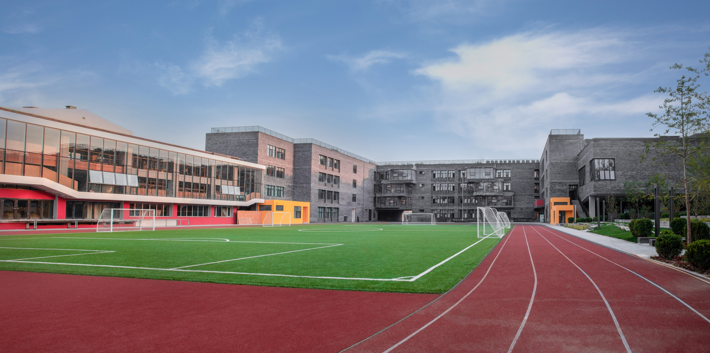

北大附中创办于1960年，作为北京市示范高中，是北京大学四级火箭（小学-中学-大学-研究生院）培养体系的重要组成部分，同时也是北京大学基础教育研究实践和后备人才培养基地。首任校长由北京大学副教务长尹企卓担任
，从北京大学各院系抽调青年教师组织附中教师队伍，建校伊始就秉承了北京大学爱国、进步、民主、科学的优良传统，大力培育勤奋、严谨、求实、创新的优良学风。北大附中致力于培养具有家国情怀、国际视野和面向未来的新时代领军人才。他们健康自信、尊重自然，善于学习、勇于创新，既能在生活中关爱他人，又能热忱服务社会和国家发展。初中阶段始终坚持“一切为了学生发展，一切适合学生发展”的办学宗旨，坚持“以人为本”的教育思想，求真务实，不断创新，形成了“重视基础，发扬个性，全面提高素质”的办学特色及基于学生实践的独具特色的完整课程体系。